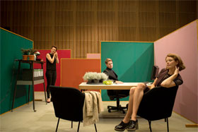

Ich will mich nicht künstlich aufregen
Asta Upset

Max Linz – Germany 2014 – 84 min.
B: Max Linz – C: Carlos Andrés López – E: Max Linz, René Frölke – S: Jaime Bustamante – P: Maximilian Haslberger, Jan Schütte
With: Sarah Ralfs, Pushpendra Singh, Barbara Heynen, Kerstin Grassmann, René Schappach, Hamza Chehade
Digital – German
The film centres on Asta, tough, hardened by theory and immaculately styled right down to the emblems on her leather jacket, with current art scene jargon flowing elegantly from her lips. She’s no hippie broad, but rather a modern-day warrior, verbally sparring with legendary actress Hannelore Hoger, her ‘film mother’, about her hobby of urban gardening.
After the relentless competition between curators over the funding for her exhibition ‘The Cinema! The Art’, for which Hannelore Hoger even whispers inaudible recommendations into the ear of the German President, Asta ultimately plumps for international backing from an Indian friend. He luckily happens to be with her out in the country when she bumps into her arch-enemy Ms Top Cultural Department Brass, a meeting with far-reaching consequences. The film is an entertaining dissection of the current state of the cultural industry, for which ‘left-wing’ and ‘right-wing’ are relevant, yet oddly obsolete categories. – Max Linz
Eröffnungsfilm – Donnerstag 09.10. 19:00 Uhr Filmmuseum – Zu Gast: Max Linz
Max Linz, born in 1984 in Frankfurt / Main. Film Studies at the Freie Universität Berlin and the Sorbonne Nouvelle Paris 3. He has studied directing at the German Film and Television Academy Berlin (DFFB).
Films: The Finances of the Grand Duke Radicant Film 2011 – Das Oberhausener Gefühl 2012 – Asta Upset 2014